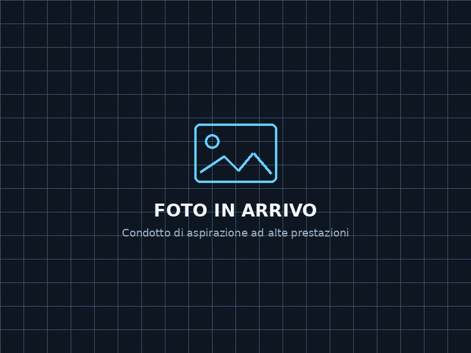

Condotto di aspirazione ad alte prestazioni
Componente progettato per convogliare il flusso d'aria verso il sistema di aspirazione, realizzato su misura per adattarsi agli ingombri e ai punti di fissaggio del veicolo.
- Materiale
- PPS-CF
- Tecnologia
- Stampa 3D FDM
- Settore
- Automotive / Motorsport
- Tipo
- Componente funzionale
La geometria interna è studiata per ottenere un passaggio dell'aria regolare, riducendo turbolenze e perdite di carico.
Realizzato tramite stampa 3D FDM in PPS-CF, tecnopolimero ad alte prestazioni rinforzato con fibra di carbonio, scelto per l'elevata rigidità, la stabilità dimensionale e la resistenza alle temperature tipiche del vano motore.
La produzione additiva permette di integrare direttamente nel componente flange, supporti, nervature di rinforzo e geometrie complesse, realizzando un pezzo personalizzato senza la necessità di stampi tradizionali.
Applicazioni: aspirazioni personalizzate, motorsport, prototipi funzionali, modifiche automotive e sostituzione di componenti non più reperibili.